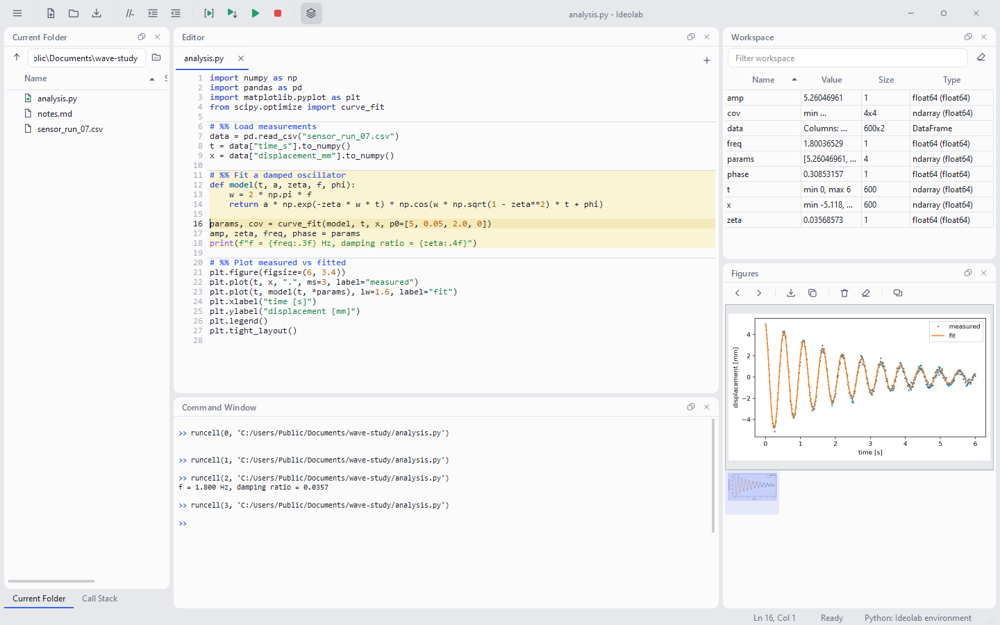

Lightweight
Opens in seconds and stays out of the way. No plugin store, no indexing your whole drive, no background services.
From Ideologic
Ideolab is a lightweight desktop IDE for scientific computing and data analysis. Write in cells, run them or step through them, and watch your variables and figures update as you go. It does that well and very little else.

Principles
Opens in seconds and stays out of the way. No plugin store, no indexing your whole drive, no background services.
Your code runs in its own Python process, so the editor never freezes during a long fit or simulation. Interrupt it whenever you like.
Every pane docks, tabs, floats onto a second monitor or hides. Save a layout for analysis, another for debugging, another for presenting.
Built around the loop of load, compute, inspect and plot. Not around web frameworks, build systems or project wizards.
Who it's for
If your work is a script that grows one cell at a time, and the answer is a number, a table or a plot, Ideolab was made for you.
Building web services or large packaged applications? A full-featured software IDE will serve you better, and that's fine.
Why Ideolab
Split a script into cells with # %% and run one with Ctrl+Enter, or run the whole file with F5. If there's a breakpoint, execution stops there either way, with that frame's variables in the workspace and the call stack beside it. Step, continue or inspect without switching modes.
11# %% Fit a damped oscillator12def model(t, a, zeta, f, phi):13 w = 2 * np.pi * f14 return a * np.exp(-zeta * w * t) * np.cos(w * t + phi)1516params, cov = curve_fit(model, t, x, p0=[5, 0.05, 2.0, 0])17amp, zeta, freq, phase = params1819# %% Plot measured vs fitted
Every variable with its type, size and a preview. Double-click a DataFrame or an array to open it as a table, edit a value in place, and watch it refresh after each command. Type a DataFrame's name at the prompt and you get a summary of its columns, not a wall of numbers.
>> dataDataFrame 600 rows x 2 columns column dtype non-null first values time_s float64 600 0.0, 0.01, 0.02 displacement_mm float64 600 4.968, 4.7971, 4.4107 >> print(f"{freq:.4f} Hz")1.8004 Hz
Plots collect in a figures pane at high resolution, with a history you can flip back through, save or copy. When you need to zoom and pan, switch to separate interactive windows with one click.
Point Ideolab at any interpreter: a conda environment, a virtualenv or a plain system install. Your code runs there, with the packages you already use. The only thing it needs is ipykernel, and the installer can add it for you.
Completions appear as you type, including the columns of DataFrames already in your workspace. Function signatures appear when you open a bracket, and Ctrl+click jumps to a definition, even in your own modules.
>> data.di displacement_mm diff div
Pricing
No subscription and no maintenance fee. Your licence covers every update in the version you buy.
When a major new version is released, it's a new purchase, with a discount for existing owners. Bug fixes and improvements within your version are always free. VAT or sales tax is added at checkout where it applies. If Ideolab isn't right for you, ask for a refund within 14 days.
Sales open soon. Checkout links will appear here when they do.
Payment and download
Secure checkout by card, Apple Pay or Google Pay. You'll get a receipt straight away.
An email arrives with your download link and licence key. You can request a fresh link at any time.
Unzip the folder and run install.bat. It sets everything up for your user account, with no admin rights needed.
ipykernel